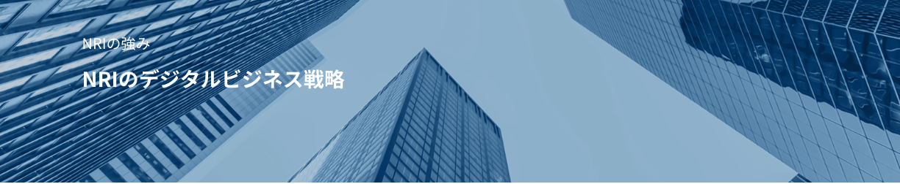
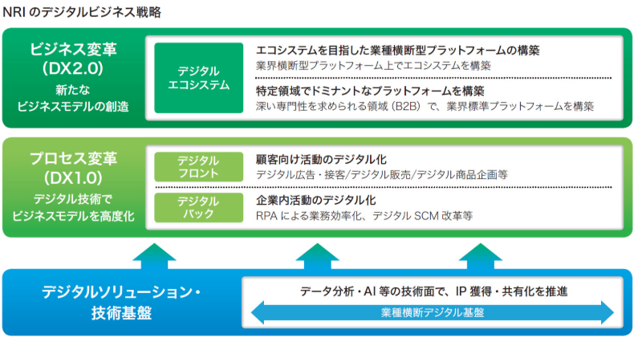
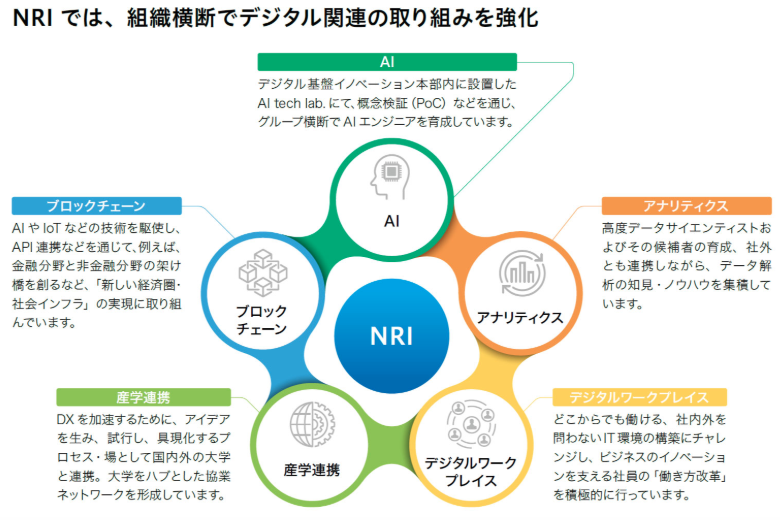
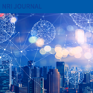
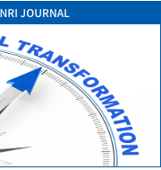
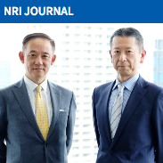
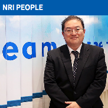
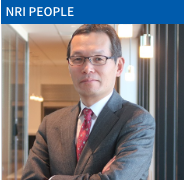
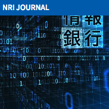

NRIのデジタルビジネス戦略
NRI では、企業の DX に向けた取り組みについて、既存ビジネスの業務プロセス変革に寄与する DX を
「DX1.0」、デジタルで新しいビジネスモデルそのものを生み出す DX を「DX2.0」と定義しています。
DX を実現するためには、業務プロセス変革やビジネスモデル創造、そして、それらを実現する IT を同時並行
で、共に議論しながら、かつ、スピーディーに実装できる戦略パートナーが必要です。NRI は、コンサルティン
グと IT ソリューションの人材と機能を併せ持ち、お客さまと併走し、お客さまと仮説検証を繰り返しながらビ
ジネスを創出する「コンソリューション」の提供を強みとして、DX の実現を推進します。


デジタルが拓く近未来 (NRIのDX)
(4.00MB)
DXの取組み事例

DXがもたらす未来(後編)
〜経済圏連携で新しい価値を
創造する
DX
経営
2018/07/04

DX成功のカギは経営者の目
線の高さ
経営
DX
2018/07/02

DXがもたらす未来(前編)
〜KDDIデジタルデザインの
挑戦
DX
経営
ビジネスIT
2018/06/27

IT市場の先導役から、未来社
会のナビゲーターへ
経営
DX
桑津 浩太郎

デジタル変革への挑戦ーー
不確実な環境下で、新しい事
業の種を発掘し育てる
経営
DX
2018/04/25

「情報銀行」は消費者に受け
入れられるか?
デジタルマーケティング
イノベーション
DX
2018/04/18
「どこかのマイル」が「広告
業界の若手が選ぶ、コミュニ
ケーション大賞-Innovative
Communication Award
(ICA)- 優秀賞」を受賞
DX
2018/04/16
企業情報
経営方針
社長メッセージ
企業理念
経営ビジョン
品質向上・リスク管理
人材の育成
内部統制
NRIグループ企業行動原則
NRIグループビジネス行動基準